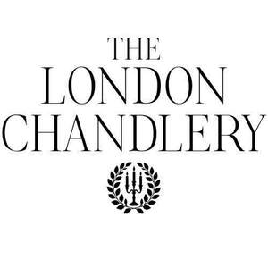

Trade Mark Journal No.2025/050 12 December 2025
UK00004300534 25 November 2025 (3,4,21)

- Class 3
- Scented wax melts; Room fragrances; Room scenting sprays; Room perfume sprays; Scented room sprays; Room perfumes in spray form; Fragrance refills for non-electric room fragrance dispensers; Room fragrancing products; Refills for electric room fragrance dispensers; Scents; Scented water for fragrancing; Perfume; Air fragrance reed diffusers; Oils for perfumes and scents; Scented body spray; Scented oils used to produce aromas when heated; Scented linen sprays; Body fragrances; Scented body lotions; Perfume oils; Scented toilet waters; Essential oils as perfume for laundry purposes; Scented fabric refresher sprays; Aromatic oils for the bath; Scented body creams; Fragrances; Cologne; Cologne water; Scented fabric refresher spray; Scented oils; Perfumed lotions [toilet preparations]; Perfumery and fragrances; Scented soaps; Scented body lotions and creams; Fragrance for household purposes; Bath lotion; Body deodorants [perfumery]; Scented bathing salts.
- Class 4
- Tealight candles; Candle wax; Candles; Votive candles; Candles and wicks for candles for lighting; Wicks for candles; Scented candles; Wicks for candles for lighting; Candles and wicks for lighting; Candles for lighting; Tea light candles; Fragranced candles; Table candles; Soy candles; Candles in tins; Perfumed candles; Candles (Perfumed -); Christmas lights [candles]; Aromatherapy fragrance candles; Wax for making candles; Church candles; Christmas tree candles; Candles (Christmas tree -); Musk scented candles; Fruit candles; Tealights; Wicks for lighting; Candles containing insect repellent; Tea lights.
- Class 21
- Candle snuffers; Candle sticks; Candle holders; Candle extinguishers; Candle rings; Candle jars [holders]; Candle drip rings; Glass holders for candles; Candle snuffers, not of precious metal; Candle extinguishers of precious metal; Candle holders of precious metal; Candle rings of precious metal; Candle extinguishers, not of precious metal; Candle warmers, electric and non-electric; Candle holders not of precious metal; Tealight burners; Candle holders of wrought iron; Candelabra [candlesticks]; Candle rings, not of precious metal; Incense stick holders; Tealight holders; Saucer lights with snuffers; Incense burners; Incense pots; Candlesticks.
The London Chandlery Limited